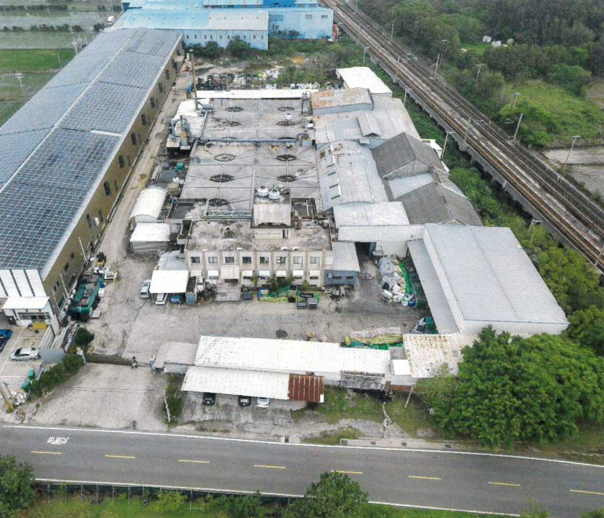
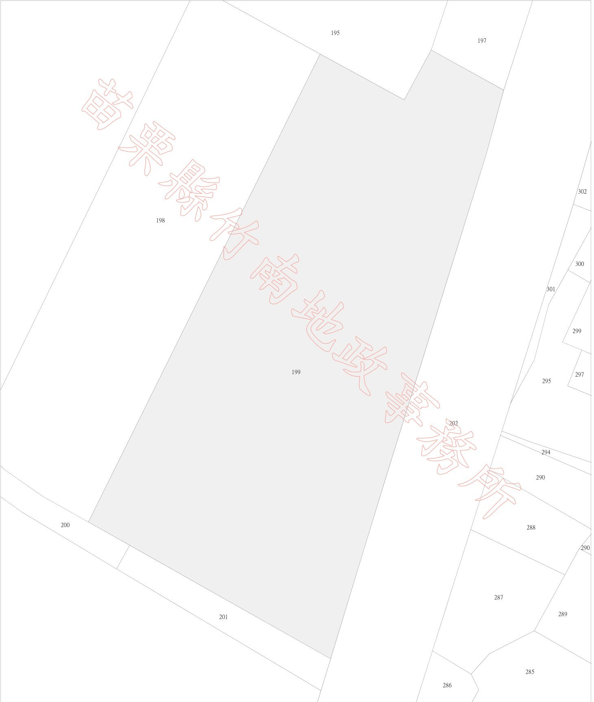
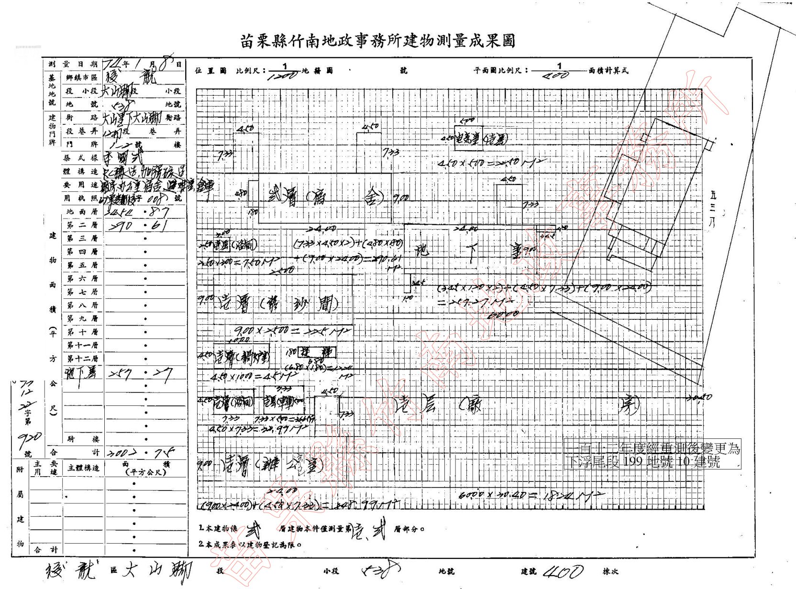
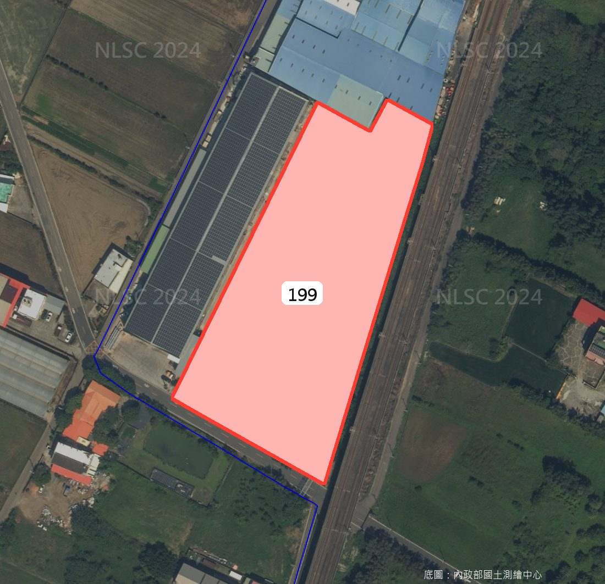

苗栗後龍・3,773坪丁建廠房
現有租客使用中，月租約 75 萬元（含稅，賣方提供）。土地方整、臨 8 米苗11線，近後龍火車站與台61、台72（車程皆約 10 分鐘內，以導航為準）。

價格怎麼看：和估價書放在一起比。
現況是在運作的工廠，不是空地。
現有租客、帶租金收入
賣方提供：目前有租客使用中，月租約 75 萬元（含稅），年租金約 900 萬元，以總價 4 億計毛租金報酬約 2.25%。租期、押金、租客是否續租，簽約前會調租約逐條確認。工廠登記屬目前營運者，自用的話買方原則上須自行辦理。
挑高生產空間＋天車
北側大範圍為開放式生產空間，鋼構桁架、混凝土地坪，估價書載有天車（噸數與淨高看廠時確認）。
地形方整、面寬大
面寬約 87 米、深約 186 米，一筆完整土地。法定容積率 300%，日後若要增建或改建，原則上須依規定申請核准；未保存登記的增建物不計入合法樓地板。
辦公、宿舍都有
南側兩層辦公樓，登記用途含辦公室、宿舍、倉庫，可規劃作行政與員工使用。
交通節點近
後龍火車站約 1.5 公里，台61、台72 約 5–6 分鐘車程（約略估算，以導航為準）。
價格可對照估價書
總價 4 億，低於估價書評估總值約 4.50 億（估價目的為銀行融資，僅供參考）。
關鍵條件，一次看清楚。
- 位置
- 苗栗縣後龍鎮大山里下大山腳 1 之 2 號
- 地號／建號
- 下浮尾段 199 地號／10 建號（112 年重測前：大山腳段 538 地號／400 建號）
- 交易類別
- 出售（土地＋建物）
- 總價
- 40,000 萬元
- 總價÷土地坪數
- 約 10.6 萬／坪（含建物）
- 土地面積
- 3,773.40 坪（12,474.06㎡）
- 使用分區
- 非都市土地・特定農業區
- 使用地類別
- 丁種建築用地
- 建蔽／容積
- 70%／300%
- 登記建物
- 908.33 坪（1F 742.60／2F 87.91／B1 77.82）
- 登記用途
- 廠房、辦公室、宿舍、倉庫、避難室
- 結構
- 鋼筋混凝土加強磚造
- 完工日期
- 民國 67 年 9 月（約 48 年）
- 增建物
- 約 1,294.73 坪，鋼架造（未保存登記，面積依估價書；賣方資料寫約 1,200 坪，室內可用空間合計約 2,100 坪）
- 使用執照
- （67）栗建都後字第 8 號
- 現況
- 現有租客使用中，月租約 75 萬元含稅（賣方提供，租約內容簽約前確認）
- 毛租金報酬
- 約 2.25%（年租約 900 萬÷總價 4 億，未扣稅費）
- 臨路
- 南側 8 米苗11線（大山腳路）
- 面寬／深度
- 約 87 米／約 186 米
- 國土功能分區
- 擬劃設為農業發展地區第二類（依規定，既有合法建物與設施原則上可繼續使用）
- 115年公告現值
- 5,100 元／㎡
- 所有權人
- 金昌運國際有限公司（統一編號 94093327）
登記住址：新北市新店區中正路四維巷 8 弄 3 號
土地、建物權利範圍皆為全部；115 年 3 月 11 日以買賣登記取得 - 他項權利
- 最高限額抵押權：華南商業銀行股份有限公司
擔保債權總金額新台幣 3 億 2,400 萬元（土地與建物共同擔保、同一筆設定，115 年 6 月 30 日登記）
原則上於交屋時以買方價金清償後塗銷
資料來源：土地／建物登記謄本（115 年 10 月 22 日）、不動產估價報告書（價格日期 115 年 3 月 30 日）；租金與增建坪數為賣方提供。面積以登記謄本為準。
地籍圖與建物測量成果圖


點圖可放大。謄本為第二類電子謄本，正確性可至 ep.land.nat.gov.tw 輸入謄本種類碼查驗（查驗期限三個月）。實地界址以地政事務所鑑界結果為準；增建物不在測量成果圖內。
現場照片
照片為外觀與空拍，多數 115 年 3 月拍攝，標「近期」的 3 張為賣方近期提供；無室內照片，室內請實地看廠。現況以實地看屋為準。
交通區位

| 目的地 | 開車距離 | 約略時間 |
|---|---|---|
| 台鐵後龍火車站 | 1.5 公里 | 3 分鐘 |
| 台61 西濱（溪州交流道） | 3.2 公里 | 5 分鐘 |
| 台72 快速道路（後龍端） | 3.4 公里 | 6 分鐘 |
| 高鐵苗栗站 | 5.1 公里 | 8 分鐘 |
| 國道3號 大山交流道 | 9.2 公里 | 10 分鐘 |
| 竹南科學園區 | 20.4 公里 | 23 分鐘 |
| 新竹科學園區 | 33.3 公里 | 28 分鐘 |
| 銅鑼科學園區 | 27.7 公里 | 29 分鐘 |
以 OpenStreetMap 路網估算，未計塞車，實際以導航為準。
看之前，建議先一起確認這幾點。
- 用途與排水：本案是非都市土地的丁種建築用地，不在編定工業區內。依估價書，日後若重新開發，原則上以工業設施為主，且限地方政府認定之低污染事業。廢水須依環保規定自行處理或申請排放，我們會先幫您跟賣方確認目前工廠的排水方式與許可。
- 一樓淨高：估價書沒有記載淨高數字（現場有天車、室內挑高）。看屋時現場丈量，確認是否符合您的設備需求。
- 大車進出：苗11線往東穿越鐵路處是鐵路橋，橋下淨高約 4.2 米；貨櫃車等較高車輛建議走西側往台61方向，實際路線看廠時一起確認。
- 建物年份與增建物：登記建物完工於民國 67 年；另有約 1,295 坪增建物未保存登記。銀行貸款與日後改建規劃，建議看屋前先一起評估。
- 租約與點交：目前有租客使用中（賣方提供月租約 75 萬含稅）。要收租還是要自用、租約剩多久、押金怎麼移轉、機具設備是否隨廠（估價不含機台與動產），簽約前會調租約逐項跟賣方確認。
- 抵押權：謄本上有華南銀行最高限額抵押權 3 億 2,400 萬元（這是設定上限，實際欠款通常較低，簽約前會請賣方提供銀行清償證明金額）。一般做法是以買方價金清償後塗銷，透過履約保證專戶處理。
- 鐵路：廠區東側為台鐵海線，賣方說明這段鐵道已高架化（苗11線從鐵道下方穿越，沒有平交道）。仍建議看廠時一併感受噪音與震動是否影響您的作業。